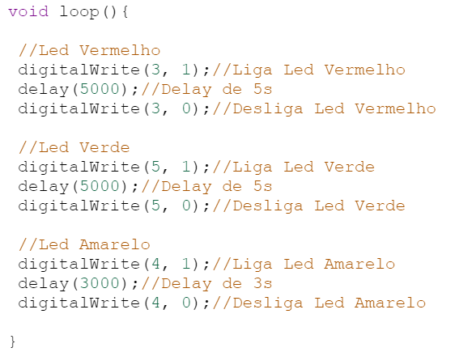
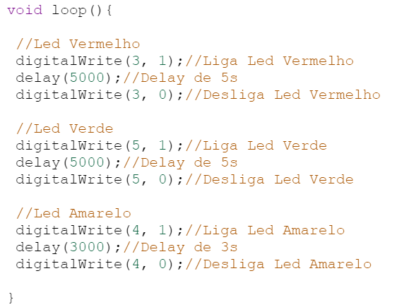

A automação industrial é o uso de tecnologias e sistemas de controle, como computadores e robôs, para operar equipamentos e processos de produção com mínima intervenção humana. Esse campo envolve a aplicação de engenharia e tecnologia para melhorar a eficiência, precisão e segurança das operações industriais.
O Tinkercad é uma plataforma online gratuita desenvolvida pela Autodesk, destinada ao design 3D, eletrônica e programação. A ferramenta é amplamente utilizada por estudantes, educadores, hobistas e iniciantes em design e eletrônica devido à sua interface amigável e intuitiva.
O Arduino é uma plataforma de prototipagem eletrônica de código aberto, amplamente utilizada por amadores, estudantes e profissionais para desenvolver projetos de eletrônica e automação. A plataforma consiste em uma série de placas de desenvolvimento de hardware, um ambiente de desenvolvimento integrado (IDE) e uma linguagem de programação baseada em C/C++.
Wokwi é uma plataforma online que permite simular circuitos eletrônicos e microcontroladores de forma interativa e acessível. Voltada tanto para iniciantes quanto para profissionais, a ferramenta oferece um ambiente visual onde é possível projetar, testar e depurar circuitos sem a necessidade de hardware físico. Entre suas funcionalidades destacam-se a simulação de placas Arduino, ESP32, entre outros dispositivos populares. A interface intuitiva e a vasta biblioteca de componentes eletrônicos tornam o Wokwi uma opção valiosa para educação, prototipagem rápida e experimentação em projetos de eletrônica e programação embarcada.
O ESP32 é um microcontrolador de alta performance desenvolvido pela Espressif Systems, amplamente
utilizado em projetos de Internet das Coisas (IoT), automação, e eletrônica embarcada. Lançado como
uma evolução do popular ESP8266, o ESP32 oferece recursos avançados e maior potência de processamento,
tornando-se uma escolha popular entre amadores, entusiastas e profissionais.
É um microcontrolador potente e versátil, ideal para projetos que exigem conectividade e processamento
eficientes. Sua rica oferta de recursos e suporte robusto tornam-no uma escolha popular para desenvolvedores
de todos os níveis.
A função setup é comumente usado no contexto de programação para microcontroladores, como no Arduino. Onde o que estiver dentro dele vai ser executado apenas uma vez em todo o código.
A função setup é comumente usado no contexto de programação para microcontroladores, como no Arduino. Onde o que estiver dentro dele vai ser executado apenas uma vez em todo o código.
 

pinMode:
O comando pinMode é usada para configurar um pino específico como entrada ou saída no Arduino.

DigitalWrite:
O comando digitalWrite é usada para definir o estado de um pino digital como HIGH (alto) ou LOW (baixo).

AnalogWrite:
O comando analogWrite é usada para gerar um sinal PWM em um pino. Isso permite simular uma saída analógica usando pinos digitais, útil para controlar a velocidade de motores, brilho de LEDs, etc.

Delay:
O comando delay é usado para criar um tempo de espera entre um comando e outro.
Uma das atividades realizadas, foi a atividade do semáforo, que consistia em fazer um semáforo no Tinkercad usando um arduino para simular um semáforo com leds.
Venha ver o resto de minhas atividades no GitHub!